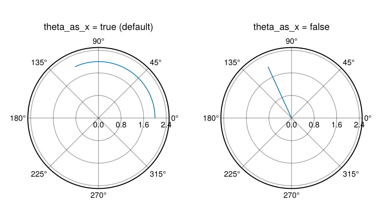
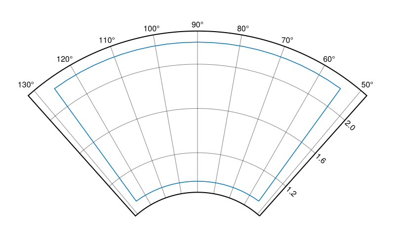
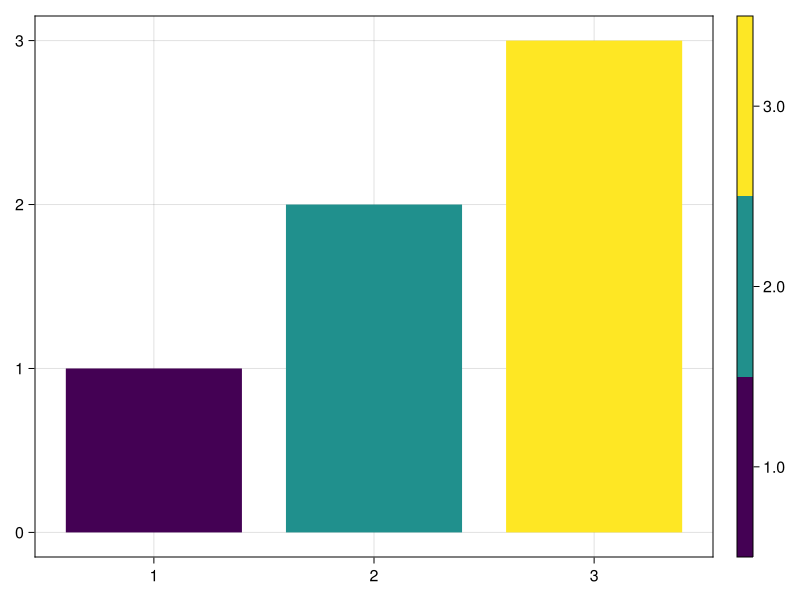
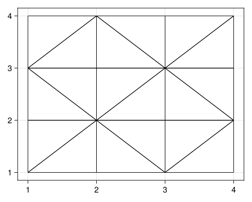
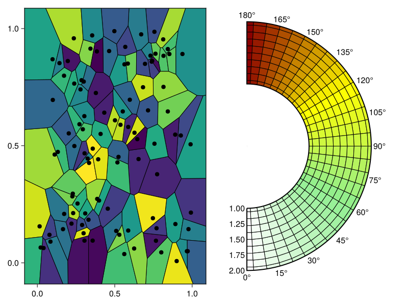
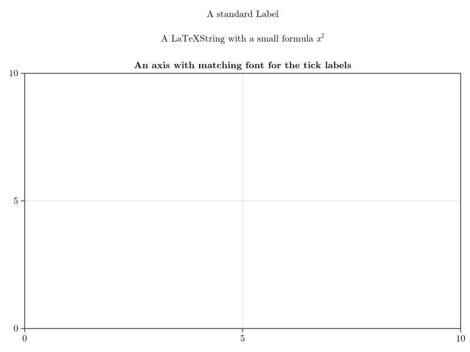
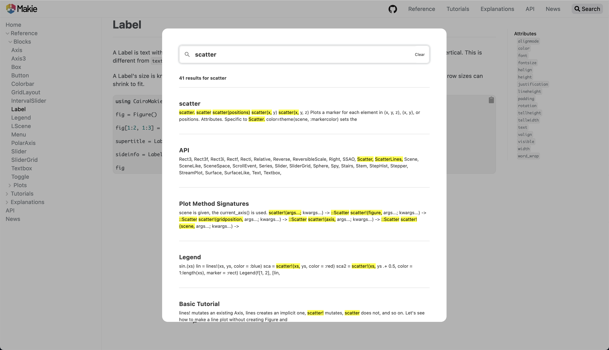

Makie has its own datashader plot type now. This is fast CPU-based binning algorithm that automatically adjusts the domain it's applied to to the current axis limits. It's useful to explore large datasets, such as this dataset with 14 million points
Or this one with 3.2 billion points
It can be customized with different aggregation functions as well as local and global transformations. The datashader plot type is currently considered experimental and might experience API breakage in patch versions.
PolarAxis has gotten a large number of changes, some of which are breaking. As we currently consider PolarAxis an experimental feature, we have pushed those changes through in a patch version.
The most important breaking change is that the order of arguments has been reversed to be in line with other plotting packages. By default plots that use the Polar transform now take arguments (theta, r). This can be reversed by setting theta_as_x = false in the transform or the PolarAxis.
using CairoMakie
fig = Figure(resolution = (800, 450))
ax1 = PolarAxis(fig[1, 1], theta_as_x = true, title = "theta_as_x = true (default)")
ax2 = PolarAxis(fig[1, 2], theta_as_x = false, title = "theta_as_x = false")
lines!(ax1, 0:0.05:2.0, [2 for _ in 1:41])
lines!(ax2, 0:0.05:2.0, [2 for _ in 1:41])
rlims!.((ax1, ax2), 0, 2.5)
fig
Most of the other changes revolve around plotting on sectors, i.e. limits where and/or spans less than 2. This means that PolarAxis now has thetalimits = (thetamin, thetamax) as a new attribute and that radius = rmax has been replaced by rlimits = (rmin, rmax).
r = range(0.3pi, 0.7pi, length=21)
xs = vcat(r, [r[end] for _ in 1:20], r[end:-1:1], [r[1] for _ in 1:20])
ys = vcat([r[1] for _ in 1:20], r, [r[end] for _ in 1:20], r[end:-1:1])
fig = Figure(resolution = (800, 500))
ax = PolarAxis(fig[1, 1], rlimits = (r[1]-0.1, r[end]+0.1), thetalimits = (r[1]-0.1, r[end]+0.1))
lines!(ax, xs, ys)
fig
There are many other small changes related to making this work, such as changes to autolimits, interactivity, tick placement and the behind-the-scenes rendering of the PolarAxis. You can find a summary of these changes in the pull request.
Refactors Colorbar to use image and heatmap instead of the heavier poly + image. Uses now ColorMapping, internally in Colorbar, to have a more consistent interface, while keeping construction of Colorbar(colormap=cmap, ...) still working.
Introduces extract_colormap, which Colorbar now uses to extract the colormapping from any plot type. The function has a fallback for any recipe, which recursively searches the child plots. One can also directly overload it for a recipe, where this isn't a good default. Will error if multiple colormappings are found in a recipe. Introduced an experimental colormap=Categorical(colormap), which creates a true categorical colormap:
f, ax, pl = barplot(1:3, color=1:3, colormap=Makie.Categorical(:viridis))
Colorbar(f[1, 2], pl)
f
Add and export ReversibleScale type, which makes it easier to create custom scale types, while still getting correct ticks in Colorbar and Axis.
Thanks to Daniel VandenHeuvel Makie now has two new plotting functions - triplot and voronoiplot. These have been moved from DelaunayTriangulation.jl . The former, triplot, will generate a triangulation given an abitrary set of 2D points.
using Random
grid = shuffle([Point2f(x, y) for x in 1:4 for y in 1:4])
f, a, p = triplot(grid, figure = (resolution = (500, 400),))
The latter, voronoiplot, will generate cells around points where the edges are halfway between neighboring points. These plots can be used as heatmaps for data that does not lie on a grid. As such they can be used as a replacement for heatmap in PolarAxis.
fig = Figure()
voronoiplot(fig[1, 1], rand(100), rand(100))
ax = PolarAxis(fig[1, 2], theta_0 = -pi/2)
xs = range(0, pi, length=30)
ys = range(1, 2, length=10)
zs = [theta for theta in xs, _ in ys]
voronoiplot!(ax, xs, ys, zs, show_generators = false, colormap = [:white, :lightgreen, :yellow, :darkred])
autolimits!(ax)
fig
Improved the automatic barplot label alignment and added the attribute label_align for custom placement.
Added a theme theme_latexfonts that uses the latex font family as default fonts
set_theme!(theme_latexfonts())
fig = Figure()
Label(fig[1, 1], "A standard Label", tellwidth = false)
Label(fig[2, 1], L"A LaTeXString with a small formula $x^2$", tellwidth = false)
Axis(fig[3, 1], title = "An axis with matching font for the tick labels")
fig
In the process of making the docs more structured, the Examples section was renamed to Reference and the Documentation section to Explanations, a how-to section was also recently added on master. In the future, it should become easier to find concrete information about what each plot and block does and how the attributes behave.
The docs style was overhauled a little as well. The page content overview on the right is now separate from the navigation on the left. This way, everything should stay more readable, especially on large pages with many sections. The docs now make better use of the available screen width.
The static search plugin was changed from stork to pagefind as stork is not being maintained anymore. On desktop, the search should be easier to read as it lives in its own modal now.

Deprecates linestyle=Vector{<:Real} for custom linestyles in favor of linestyle=Linestyle(value::Vector{<:Real}), to make it less ambigious if the attribute is per linepoint or for the whole line.
Fix deactivated scroll interactions still consuming event #3272
Fix grouping of zero-height bar in barplot #3058
Upgrade StableHashTraits #3309
DataInspector: fix an attribute extraction bug for heatmaps & images #3260
Fix bezier construction for strings starting with m #3313
Fix grouping of a zero-height bar in barplot. Now a zero-height bar shares the same properties of the previous bar, and if the bar is the first one, its height is treated as positive if and only if there exists a bar of positive height or all bars are zero-height #3058
Fixed a bug where Axis still consumes scroll events when interactions are disabled #3272.
Added cornerradius attribute to Box for rounded corners #3308
Upgraded StableHashTraits from 1.0 to 1.1 #3309